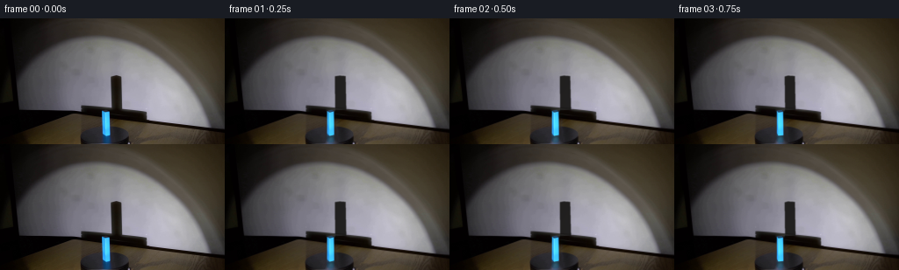

CODING AGENTS AS PIXEL WORLD MODELS
traex/GPT-6.1-Sol · 0075
点击播放 · 原生 RGB 像素
逐轮保存的候选
回放视频、检查图与代码变化。
每份候选均可单独播放。实际图片检查记录在下方工具轨迹中。
候选 01播放与检查图
点击播放 · 原生 RGB 像素


展开代码变化
--- 上一保存版本
+++ 本次保存版本
@@ -0,0 +1,189 @@
+from pathlib import Path
+import math
+import cv2
+import numpy as np
+from PIL import Image
+import artifact_io
+
+ROOT = Path(__file__).resolve().parent
+S=4
+H,W=144,256
+IH,IW=H*S,W*S
+original=np.array(Image.open(ROOT/'first_frame.png').convert('RGB'))
+f=original.astype(np.float32)
+y,x=np.mgrid[:H,:W].astype(np.float32)
+# Recover the illuminated wall hidden behind the upright shadow, keeping the
+# broad, fixed shadow of the circular turntable intact.
+clean=f.copy()
+for yy in range(64,105):
+ l,r=124,141
+ for xx in range(125,141):
+ a=(xx-l)/(r-l)
+ clean[yy,xx]=(1-a)*f[yy,l]+a*f[yy,r]
+# Only the moving blue prism and its small reflection are removed here.
+mask=np.zeros((H,W),np.uint8)
+cv2.fillPoly(mask,[np.array([[115,104],[125,104],[127,134],[129,142],[114,142],[114,133]],np.int32)],255)
+clean=cv2.inpaint(np.uint8(np.clip(clean,0,255)),mask,3,cv2.INPAINT_TELEA).astype(np.float32)
+# Smooth interpolation of the wall's extremely low-contrast texture.
+wall_mask=np.zeros((H,W),np.float32)
+wall_mask[64:104,125:141]=1
+wall_mask=cv2.GaussianBlur(wall_mask,(0,0),.42)
+# Shadow optical density in the input, measured relative to the uncovered wall.
+shadow_delta=np.maximum(clean-f,0)
+shadow_delta[:64]=0
+shadow_delta[105:]=0
+shadow_delta[:,:124]=0
+shadow_delta[:,141:]=0
+
+# Coordinates: x across the table, y toward the wall, z vertical.
+a,b,height=6.0,5.7,26.7
+theta0=np.deg2rad(42.)
+center=np.array([120.45,132.85],np.float32)
+
+def rotate(points,ang):
+ c,s=np.cos(ang),np.sin(ang)
+ out=np.array(points,dtype=np.float32).copy()
+ out[...,0]=c*np.asarray(points)[...,0]-s*np.asarray(points)[...,1]
+ out[...,1]=s*np.asarray(points)[...,0]+c*np.asarray(points)[...,1]
+ return out
+
+def vertices(ang):
+ p=np.array([[-a/2,-b/2,0],[a/2,-b/2,0],[a/2,b/2,0],[-a/2,b/2,0]],np.float32)
+ p=rotate(p,ang)
+ return np.concatenate([p,p+[0,0,height]],axis=0).astype(np.float32)
+
+def project(p):
+ p=np.asarray(p)
+ # Weak perspective and modest downward view match the first frame.
+ return np.stack([center[0]+(p[...,0]+.045*p[...,1])*(1-.0013*p[...,2]),center[1]-.34*p[...,1]-p[...,2]],axis=-1).astype(np.float32)
+
+faceids=[[0,1,5,4],[1,2,6,5],[2,3,7,6],[3,0,4,7]]
+# The two visible facets are sampled from the real photographed object.
+# Other facets use the same translucent blue material with mirrored grain.
+source_left=np.array([[116.65,132.5],[120.1,133.4],[120.0,108.0],[116.15,106.8]],np.float32)
+source_right=np.array([[120.1,133.4],[124.55,132.8],[124.3,107.25],[120.0,108.0]],np.float32)
+uvrect=np.array([[0,127],[47,127],[47,0],[0,0]],np.float32)
+tex_left=cv2.warpPerspective(f,cv2.getPerspectiveTransform(source_left,uvrect),(48,128),flags=cv2.INTER_LINEAR)
+tex_right=cv2.warpPerspective(f,cv2.getPerspectiveTransform(source_right,uvrect),(48,128),flags=cv2.INTER_LINEAR)
+# Keep facet interiors; edge pixels are handled by antialiased geometry.
+tex_left[:,:,0]=np.maximum(tex_left[:,:,0],20)
+tex_right[:,:,0]=np.maximum(tex_right[:,:,0],25)
+textures=[tex_right,tex_left[:,::-1].copy(),tex_right[:,::-1].copy(),tex_left]
+
+def paint_polygon(canvas,poly,color):
+ m=np.zeros((IH,IW),np.uint8)
+ cv2.fillConvexPoly(m,np.round(poly*S).astype(np.int32),255,lineType=cv2.LINE_AA)
+ alpha=m.astype(np.float32)[...,None]/255
+ canvas[:]=canvas*(1-alpha)+np.asarray(color,dtype=np.float32)*alpha
+ return m
+
+def render_block(ang,reflection=False):
+ v=vertices(ang)
+ if reflection:
+ v[:,2]*=-.30
+ p=project(v)
+ out=np.zeros((IH,IW,3),np.float32)
+ total=np.zeros((IH,IW),np.float32)
+ # Visible faces for a camera on the near side of the turntable.
+ visible=[]
+ for k,ids in enumerate(faceids):
+ normal=rotate(np.array([[0,-1,0],[1,0,0],[0,1,0],[-1,0,0]],np.float32)[k:k+1],ang)[0]
+ facing=np.dot(normal,np.array([.045,-1,.34]))
+ if facing>1e-5: visible.append((float(v[ids,1].mean()),k,normal))
+ for _,k,normal in sorted(visible,reverse=True):
+ ids=faceids[k]
+ poly=p[ids]
+ tex=textures[k].copy()
+ # Fixed spotlight: gentle diffuse variation, never a flashing hue.
+ illumination=.84+.19*max(0,float(np.dot(normal,np.array([-.22,-.976,0]))))
+ initial=rotate(np.array([[0,-1,0],[1,0,0],[0,1,0],[-1,0,0]],np.float32)[k:k+1],theta0)[0]
+ ref=.84+.19*max(0,float(np.dot(initial,np.array([-.22,-.976,0]))))
+ tex*=illumination/ref
+ if reflection: tex*=.41
+ trans=cv2.getPerspectiveTransform(uvrect,poly*S)
+ warped=cv2.warpPerspective(tex,trans,(IW,IH),flags=cv2.INTER_LINEAR,borderMode=cv2.BORDER_REPLICATE)
+ m=np.zeros((IH,IW),np.uint8)
+ cv2.fillConvexPoly(m,np.round(poly*S).astype(np.int32),255,lineType=cv2.LINE_AA)
+ alpha=m.astype(np.float32)/255
+ out=out*(1-alpha[...,None])+warped*alpha[...,None]
+ total=total*(1-alpha)+alpha
+ if not reflection:
+ top=p[[4,5,6,7]]
+ m=paint_polygon(out,top,[37,70,101])
+ total=np.maximum(total,m.astype(np.float32)/255)
+ # A fine, cyan glint follows the physical corner, not the screen.
+ for j in range(4):
+ prev=(j-1)%4
+ visible_keys=[q[1] for q in visible]
+ if j in visible_keys and prev in visible_keys:
+ color=(100,227,252)
+ cv2.line(out,tuple(np.round(p[j]*S).astype(int)),tuple(np.round(p[j+4]*S).astype(int)),color,1,cv2.LINE_AA)
+ return out,total
+
+# A point spotlight below the block projects its silhouette onto the rear wall.
+# The disk's silhouette remains fixed because its footprint is rotationally symmetric.
+light=np.array([-15.,-180.,8.],np.float32)
+wall_depth=90.
+def wall_polygon(ang):
+ p=vertices(ang)
+ lam=(wall_depth-light[1])/(p[:,1]-light[1])
+ q=light+(p-light)*lam[:,None]
+ return cv2.convexHull(project(q)).reshape(-1,2)
+
+def shadow_mask(ang):
+ poly=wall_polygon(ang)
+ m=np.zeros((IH,IW),np.float32)
+ cv2.fillConvexPoly(m,np.round(poly*S).astype(np.int32),1.,lineType=cv2.LINE_8)
+ m=cv2.GaussianBlur(m,(0,0),.44*S)
+ return m
+
+base_hi=cv2.resize(clean,(IW,IH),interpolation=cv2.INTER_CUBIC)
+old_sm=shadow_mask(theta0)
+# The true photographed shadow has soft edge leakage and a warm dark core.
+# Remove its residual column around the seam to the platform shadow.
+base_small=clean.copy()
+# Compute a spatially calibrated shadow optical density from the original.
+YY,XX=np.mgrid[:IH,:IW].astype(np.float32)
+XX=(XX+.5)/S-.5; YY=(YY+.5)/S-.5
+# Do not shadow the foreground table: clip at the existing rear-disk silhouette.
+rear_boundary=99.4+.112*(XX-93)
+clip=1/(1+np.exp(np.clip((YY-rear_boundary)*3.5,-60,60)))
+
+# The disk surface is lit in the lab frame; only its very subtle material grain rotates.
+platform=np.exp(-(((x-120)/28.5)**2+((y-133.2)/10.5)**2)*2)
+platform*=((y>=124)&(y<143)).astype(np.float32)
+noise=clean-cv2.GaussianBlur(clean,(0,0),.85)
+noise*=platform[...,None]
+
+frames=[original]
+for i in range(1,20):
+ # Positive rotation carries the right-hand edge toward the camera: clockwise
+ # when seen from above. Motion is uniform at the requested constant rate.
+ ang=theta0-np.deg2rad(28.)*(i/4.)
+ canvas=base_hi.copy()
+ sm=shadow_mask(ang)*clip
+ dark=np.array([19,18,16],np.float32)
+ # Boundary softness and a weak reflected-light floor reproduce the dense shadow.
+ canvas=canvas*(1-sm[...,None]*.90)+dark*sm[...,None]*.90
+ # Rotate only the high-frequency albedo on the top of the black disk.
+ da=ang-theta0
+ px=(x-120)/28.5; py=(y-133.2)/10.5
+ c,s=np.cos(da),np.sin(da)
+ mapx=(120+28.5*(c*px+s*py)).astype(np.float32)
+ mapy=(133.2+10.5*(-s*px+c*py)).astype(np.float32)
+ n=cv2.remap(noise,mapx,mapy,cv2.INTER_LINEAR,borderMode=cv2.BORDER_CONSTANT)
+ grain=(n-noise)*platform[...,None]*.3
+ canvas+=cv2.resize(grain,(IW,IH),interpolation=cv2.INTER_LINEAR)
+ refl,rm=render_block(ang,True)
+ rm=cv2.GaussianBlur(rm,(0,0),.6*S)
+ refl=cv2.GaussianBlur(refl,(0,0),.6*S)
+ # Reflections are subdued and confined to the front of the black disk.
+ rm*=np.clip((YY-133)/2,0,1)*np.clip((143-YY)/1,0,1)
+ canvas=canvas*(1-rm[...,None]*.56)+refl*.56
+ block,bm=render_block(ang)
+ canvas=canvas*(1-bm[...,None])+block
+ frame=cv2.resize(canvas,(W,H),interpolation=cv2.INTER_AREA)
+ frames.append(np.uint8(np.clip(np.rint(frame),0,255)))
+frames=np.stack(frames)
+artifact_io.save(frames,ROOT)
+np.save(ROOT/'.tmp/generated_rgb.npy',frames)
候选 02播放与检查图
点击播放 · 原生 RGB 像素
展开代码变化
--- 上一保存版本
+++ 本次保存版本
@@ -68,6 +68,11 @@
# Keep facet interiors; edge pixels are handled by antialiased geometry.
tex_left[:,:,0]=np.maximum(tex_left[:,:,0],20)
tex_right[:,:,0]=np.maximum(tex_right[:,:,0],25)
+# Keep the luminous edge cyan rather than saturating it to a white stripe.
+for tex in (tex_left,tex_right):
+ tex[:,:,0]=np.minimum(tex[:,:,0],116)
+ tex[:,:,1]=np.minimum(tex[:,:,1],234)
+ tex[:,:,2]=np.maximum(tex[:,:,2],tex[:,:,1]*1.085)
textures=[tex_right,tex_left[:,::-1].copy(),tex_right[:,::-1].copy(),tex_left]
def paint_polygon(canvas,poly,color):
@@ -182,7 +187,9 @@
canvas=canvas*(1-rm[...,None]*.56)+refl*.56
block,bm=render_block(ang)
canvas=canvas*(1-bm[...,None])+block
- frame=cv2.resize(canvas,(W,H),interpolation=cv2.INTER_AREA)
+ # A differential composite preserves every stationary photographic pixel;
+ # supersampling applies only to the analytic moving geometry.
+ frame=clean+cv2.resize(canvas-base_hi,(W,H),interpolation=cv2.INTER_AREA)
frames.append(np.uint8(np.clip(np.rint(frame),0,255)))
frames=np.stack(frames)
artifact_io.save(frames,ROOT)
候选 03播放与检查图
可观测工具轨迹
实际执行的命令与返回图片。
命令 1exit 0
/bin/bash -lc 'ls -la && cat prompt.txt && cat GENERATION_RULES.md'
命令 2exit 0
/bin/bash -lc "cat artifact_io.py && python - <<'PY'
from PIL import Image
import numpy as np
im=np.array(Image.open('first_frame.png')); print(im.shape)
for y in range(0,144,4):
print('%3d'%y,''.join('B' if b>r*1.3 and b>g*1.1 and b>45 else 'K' if max(r,g,b)<35 else 'D' if max(r,g,b)<90 else 's' if max(r,g,b)<145 else '.' if max(r,g,b)<200 else 'W' for r,g,b in im[y,::3].astype(float)))
print('pixels')
for y in [0,10,20,30,40,50,60,70,80,90,100,110,120,130,143]: print(y, [(x,im[y,x].tolist()) for x in range(0,256,16)])
PY"命令 3exit 0
/bin/bash -lc "python - <<'PY'
from PIL import Image
import numpy as np
I=np.asarray(Image.open('first_frame.png')).astype(float)
# Print 1-pixel resolution main scene lower half
for y in range(62,144):
s=''
for x in range(82,174):
r,g,b=I[y,x]; val=max(r,g,b)
s+= 'C' if b>r*1.3 and b>g*1.1 and b>45 else 'w' if b>r+12 and b>g+10 and val>65 else 'W' if val>200 else '.' if val>145 else ':' if val>100 else ';' if val>60 else '-' if val>35 else 'k' if val>15 else '#'
print(f'{y:3}',s)
print('blue bounds')
m=(I[:,:,2]>I[:,:,0]*1.3)&(I[:,:,2]>I[:,:,1]*1.1)&(I[:,:,2]>45)
for y in range(100,144):
xx=np.where(m[y])[0]
if len(xx): print(y,xx.tolist(),I[y,xx].astype(int).tolist())
PY"命令 4exit 0
/bin/bash -lc "python - <<'PY'
import numpy as np
from PIL import Image
I=np.array(Image.open('first_frame.png'))
print('shadow minimum details')
for y in range(62,110):
vals=I[y,119:146].mean(1)
print(y, ' '.join(f'{x}:{int(vals[x-119])}' for x in range(123,145)))
print('lower pixels')
for y in [124,125,126,127,128,130,132,134,136,138,140,142]:
print(y,' '.join(f'{x}:{tuple(I[y,x])}' for x in range(88,150,2)))
PY"命令 5exit 0
/bin/bash -lc "python - <<'PY'
from PIL import Image
import numpy as np
I=np.array(Image.open('first_frame.png'))
for y in range(103,110):
print(y,' '.join(f'{x}={I[y,x].tolist()}' for x in range(114,127)))
# Gray patches full lower context
chars=' .,:;irsXA253hMHGS#9B&@'
A=I.mean(2)
for y in range(95,144): print(f'{y:3}', ''.join(chars[min(len(chars)-1,int(v/256*len(chars)))] for v in A[y,60:190]))
PY"命令 6exit 0
/bin/bash -lc "python - <<'PY'
import cv2, numpy, scipy
print('available',cv2.__version__)
PY"命令 7exit 0
/bin/bash -lc "cat > generate.py <<'PY'
from pathlib import Path
import math
import cv2
import numpy as np
from PIL import Image
import artifact_io
ROOT = Path(__file__).resolve().parent
S=4
H,W=144,256
IH,IW=H*S,W*S
original=np.array(Image.open(ROOT/'first_frame.png').convert('RGB'))
f=original.astype(np.float32)
y,x=np.mgrid[:H,:W].astype(np.float32)
# Recover the illuminated wall hidden behind the upright shadow, keeping the
# broad, fixed shadow of the circular turntable intact.
clean=f.copy()
for yy in range(64,105):
l,r=124,141
for xx in range(125,141):
a=(xx-l)/(r-l)
clean[yy,xx]=(1-a)*f[yy,l]+a*f[yy,r]
# Only the moving blue prism and its small reflection are removed here.
mask=np.zeros((H,W),np.uint8)
cv2.fillPoly(mask,[np.array([[115,104],[125,104],[127,134],[129,142],[114,142],[114,133]],np.int32)],255)
clean=cv2.inpaint(np.uint8(np.clip(clean,0,255)),mask,3,cv2.INPAINT_TELEA).astype(np.float32)
# Smooth interpolation of the wall's extremely low-contrast texture.
wall_mask=np.zeros((H,W),np.float32)
wall_mask[64:104,125:141]=1
wall_mask=cv2.GaussianBlur(wall_mask,(0,0),.42)
# Shadow optical density in the input, measured relative to the uncovered wall.
shadow_delta=np.maximum(clean-f,0)
shadow_delta[:64]=0
shadow_delta[105:]=0
shadow_delta[:,:124]=0
shadow_delta[:,141:]=0
# Coordinates: x across the table, y toward the wall, z vertical.
a,b,height=6.0,5.7,26.7
theta0=np.deg2rad(42.)
center=np.array([120.45,132.85],np.float32)
def rotate(points,ang):
c,s=np.cos(ang),np.sin(ang)
out=np.array(points,dtype=np.float32).copy()
out[...,0]=c*np.asarray(points)[...,0]-s*np.asarray(points)[...,1]
out[...,1]=s*np.asarray(points)[...,0]+c*np.asarray(points)[...,1]
return out
def vertices(ang):
p=np.array([[-a/2,-b/2,0],[a/2,-b/2,0],[a/2,b/2,0],[-a/2,b/2,0]],np.float32)
p=rotate(p,ang)
return np.concatenate([p,p+[0,0,height]],axis=0).astype(np.float32)
def project(p):
p=np.asarray(p)
# Weak perspective and modest downward view match the first frame.
return np.stack([center[0]+(p[...,0]+.045*p[...,1])*(1-.0013*p[...,2]),center[1]-.34*p[...,1]-p[...,2]],axis=-1).astype(np.float32)
faceids=[[0,1,5,4],[1,2,6,5],[2,3,7,6],[3,0,4,7]]
# The two visible facets are sampled from the real photographed object.
# Other facets use the same translucent blue material with mirrored grain.
source_left=np.array([[116.65,132.5],[120.1,133.4],[120.0,108.0],[116.15,106.8]],np.float32)
source_right=np.array([[120.1,133.4],[124.55,132.8],[124.3,107.25],[120.0,108.0]],np.float32)
uvrect=np.array([[0,127],[47,127],[47,0],[0,0]],np.float32)
tex_left=cv2.warpPerspective(f,cv2.getPerspectiveTransform(source_left,uvrect),(48,128),flags=cv2.INTER_LINEAR)
tex_right=cv2.warpPerspective(f,cv2.getPerspectiveTransform(source_right,uvrect),(48,128),flags=cv2.INTER_LINEAR)
# Keep facet interiors; edge pixels are handled by antialiased geometry.
tex_left[:,:,0]=np.maximum(tex_left[:,:,0],20)
tex_right[:,:,0]=np.maximum(tex_right[:,:,0],25)
textures=[tex_right,tex_left[:,::-1].copy(),tex_right[:,::-1].copy(),tex_left]
def paint_polygon(canvas,poly,color):
m=np.zeros((IH,IW),np.uint8)
cv2.fillConvexPoly(m,np.round(poly*S).astype(np.int32),255,lineType=cv2.LINE_AA)
alpha=m.astype(np.float32)[...,None]/255
canvas[:]=canvas*(1-alpha)+np.asarray(color,dtype=np.float32)*alpha
return m
def render_block(ang,reflection=False):
v=vertices(ang)
if reflection:
v[:,2]*=-.30
p=project(v)
out=np.zeros((IH,IW,3),np.float32)
total=np.zeros((IH,IW),np.float32)
# Visible faces for a camera on the near side of the turntable.
visible=[]
for k,ids in enumerate(faceids):
normal=rotate(np.array([[0,-1,0],[1,0,0],[0,1,0],[-1,0,0]],np.float32)[k:k+1],ang)[0]
facing=np.dot(normal,np.array([.045,-1,.34]))
if facing>1e-5: visible.append((float(v[ids,1].mean()),k,normal))
for _,k,normal in sorted(visible,reverse=True):
ids=faceids[k]
poly=p[ids]
tex=textures[k].copy()
# Fixed spotlight: gentle diffuse variation, never a flashing hue.
illumination=.84+.19*max(0,float(np.dot(normal,np.array([-.22,-.976,0]))))
initial=rotate(np.array([[0,-1,0],[1,0,0],[0,1,0],[-1,0,0]],np.float32)[k:k+1],theta0)[0]
ref=.84+.19*max(0,float(np.dot(initial,np.array([-.22,-.976,0]))))
tex*=illumination/ref
if reflection: tex*=.41
trans=cv2.getPerspectiveTransform(uvrect,poly*S)
warped=cv2.warpPerspective(tex,trans,(IW,IH),flags=cv2.INTER_LINEAR,borderMode=cv2.BORDER_REPLICATE)
m=np.zeros((IH,IW),np.uint8)
cv2.fillConvexPoly(m,np.round(poly*S).astype(np.int32),255,lineType=cv2.LINE_AA)
alpha=m.astype(np.float32)/255
out=out*(1-alpha[...,None])+warped*alpha[...,None]
total=total*(1-alpha)+alpha
if not reflection:
top=p[[4,5,6,7]]
m=paint_polygon(out,top,[37,70,101])
total=np.maximum(total,m.astype(np.float32)/255)
# A fine, cyan glint follows the physical corner, not the screen.
for j in range(4):
prev=(j-1)%4
visible_keys=[q[1] for q in visible]
if j in visible_keys and prev in visible_keys:
color=(100,227,252)
cv2.line(out,tuple(np.round(p[j]*S).astype(int)),tuple(np.round(p[j+4]*S).astype(int)),color,1,cv2.LINE_AA)
return out,total
# A point spotlight below the block projects its silhouette onto the rear wall.
# The disk's silhouette remains fixed because its footprint is rotationally symmetric.
light=np.array([-15.,-180.,8.],np.float32)
wall_depth=90.
def wall_polygon(ang):
p=vertices(ang)
lam=(wall_depth-light[1])/(p[:,1]-light[1])
q=light+(p-light)*lam[:,None]
return cv2.convexHull(project(q)).reshape(-1,2)
def shadow_mask(ang):
poly=wall_polygon(ang)
m=np.zeros((IH,IW),np.float32)
cv2.fillConvexPoly(m,np.round(poly*S).astype(np.int32),1.,lineType=cv2.LINE_8)
m=cv2.GaussianBlur(m,(0,0),.44*S)
return m
base_hi=cv2.resize(clean,(IW,IH),interpolation=cv2.INTER_CUBIC)
old_sm=shadow_mask(theta0)
# The true photographed shadow has soft edge leakage and a warm dark core.
# Remove its residual column around the seam to the platform shadow.
base_small=clean.copy()
# Compute a spatially calibrated shadow optical density from the original.
YY,XX=np.mgrid[:IH,:IW].astype(np.float32)
XX=(XX+.5)/S-.5; YY=(YY+.5)/S-.5
# Do not shadow the foreground table: clip at the existing rear-disk silhouette.
rear_boundary=99.4+.112*(XX-93)
clip=1/(1+np.exp(np.clip((YY-rear_boundary)*3.5,-60,60)))
# The disk surface is lit in the lab frame; only its very subtle material grain rotates.
platform=np.exp(-(((x-120)/28.5)**2+((y-133.2)/10.5)**2)*2)
platform*=((y>=124)&(y<143)).astype(np.float32)
noise=clean-cv2.GaussianBlur(clean,(0,0),.85)
noise*=platform[...,None]
frames=[original]
for i in range(1,20):
# Positive rotation carries the right-hand edge toward the camera: clockwise
# when seen from above. Motion is uniform at the requested constant rate.
ang=theta0-np.deg2rad(28.)*(i/4.)
canvas=base_hi.copy()
sm=shadow_mask(ang)*clip
dark=np.array([19,18,16],np.float32)
# Boundary softness and a weak reflected-light floor reproduce the dense shadow.
canvas=canvas*(1-sm[...,None]*.90)+dark*sm[...,None]*.90
# Rotate only the high-frequency albedo on the top of the black disk.
da=ang-theta0
px=(x-120)/28.5; py=(y-133.2)/10.5
c,s=np.cos(da),np.sin(da)
mapx=(120+28.5*(c*px+s*py)).astype(np.float32)
mapy=(133.2+10.5*(-s*px+c*py)).astype(np.float32)
n=cv2.remap(noise,mapx,mapy,cv2.INTER_LINEAR,borderMode=cv2.BORDER_CONSTANT)
grain=(n-noise)*platform[...,None]*.3
canvas+=cv2.resize(grain,(IW,IH),interpolation=cv2.INTER_LINEAR)
refl,rm=render_block(ang,True)
rm=cv2.GaussianBlur(rm,(0,0),.6*S)
refl=cv2.GaussianBlur(refl,(0,0),.6*S)
# Reflections are subdued and confined to the front of the black disk.
rm*=np.clip((YY-133)/2,0,1)*np.clip((143-YY)/1,0,1)
canvas=canvas*(1-rm[...,None]*.56)+refl*.56
block,bm=render_block(ang)
canvas=canvas*(1-bm[...,None])+block
frame=cv2.resize(canvas,(W,H),interpolation=cv2.INTER_AREA)
frames.append(np.uint8(np.clip(np.rint(frame),0,255)))
frames=np.stack(frames)
artifact_io.save(frames,ROOT)
np.save(ROOT/'.tmp/generated_rgb.npy',frames)
PY
python generate.py"命令 8exit 0
/bin/bash -lc "python - <<'PY'
import numpy as np
from PIL import Image
A=np.load('.tmp/generated_rgb.npy')
for i in [0,1,3,6,9,12,15,19]:
I=A[i].astype(float)
print('\\nFRAME',i)
for y in range(63,144,2):
s=''
for x in range(111,145):
r,g,b=I[y,x]; v=max(r,g,b)
s+='B' if b>r*1.3 and b>g*1.1 and b>45 else 'c' if b>r+10 and b>g+10 and v<120 else '.' if v>145 else ':' if v>100 else ';' if v>60 else '-' if v>35 else 'k' if v>15 else '#'
print(y,s)
print('delta',abs(I-A[0]).mean(), 'range',I.min(),I.max())
PY"命令 9exit 0
/bin/bash -lc "python - <<'PY'
p='generate.py'
s=open(p).read().replace(\"textures=[tex_right,tex_left[:,::-1].copy(),tex_right[:,::-1].copy(),tex_left]\", \"# Keep the luminous edge cyan rather than saturating it to a white stripe.\\nfor tex in (tex_left,tex_right):\\n tex[:,:,0]=np.minimum(tex[:,:,0],116)\\n tex[:,:,1]=np.minimum(tex[:,:,1],234)\\n tex[:,:,2]=np.maximum(tex[:,:,2],tex[:,:,1]*1.085)\\ntextures=[tex_right,tex_left[:,::-1].copy(),tex_right[:,::-1].copy(),tex_left]\")
s=s.replace(\"frame=cv2.resize(canvas,(W,H),interpolation=cv2.INTER_AREA)\",\"# A differential composite preserves every stationary photographic pixel;\\n # supersampling applies only to the analytic moving geometry.\\n frame=clean+cv2.resize(canvas-base_hi,(W,H),interpolation=cv2.INTER_AREA)\")
open(p,'w').write(s)
PY
python generate.py
python - <<'PY'
import numpy as np
A=np.load('.tmp/generated_rgb.npy')
print('shape/dtype',A.shape,A.dtype)
from PIL import Image
assert np.array_equal(A[0],np.asarray(Image.open('first_frame.png')))
for i in [1,6,12,19]:
d=np.abs(A[i].astype(float)-A[0]); print(i,'mean delta',d.mean(),'changed pixels',np.sum(np.any(d>0,axis=2)))
print('block at120',A[i,112:125,120].tolist())
PY"保存候选 3 份；完成命令 9 次；可验证图片返回 0 张。原始 API 响应与完整日志保留在本地。